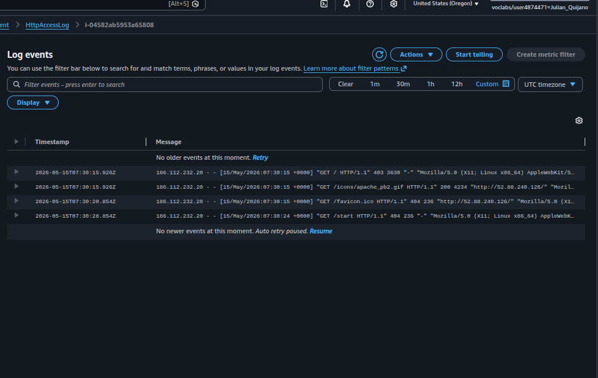
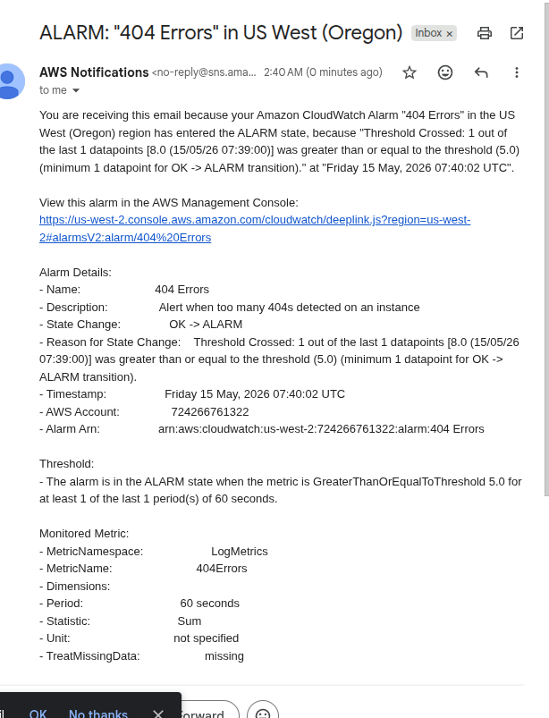
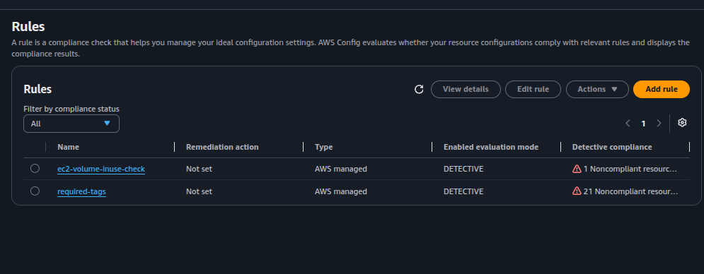

Agent installation via SSM
Used AWS-ConfigureAWSPackage to install the agent, AmazonCloudWatch-ManageAgent
to start it, and Parameter Store to hold the configuration centrally.
Instrumented an EC2 web server with the CloudWatch Agent via Systems Manager Run Command, captured Apache access/error logs into CloudWatch Logs, fired a metric-filter alarm on HTTP 404s, wired an EventBridge rule on EC2 state changes, and audited compliance with two AWS Config rules.
A pre-provisioned Web Server EC2 instance was instrumented end-to-end: the CloudWatch Agent was pushed via SSM Run Command using a JSON configuration stored in Parameter Store. Apache logs flowed into CloudWatch Logs, a metric filter on the access log triggered an SNS-backed alarm when 404 errors crossed a threshold, an EventBridge rule reacted to EC2 state changes, and AWS Config evaluated the account against two managed rules.
Used AWS-ConfigureAWSPackage to install the agent, AmazonCloudWatch-ManageAgent
to start it, and Parameter Store to hold the configuration centrally.
Apache access logs → metric filter on status_code 404 → CloudWatch Alarm → SNS topic → email.
In parallel, AWS Config detected missing project tags and unused EBS volumes.
Four monitoring layers, each handled by a different service. The CloudWatch Agent unifies the first two; the rest run independently against the same EC2 resources.
| Layer | What it watches | Service | Source |
|---|---|---|---|
| System metrics | CPU per mode, memory, disk used %, swap, disk I/O | CloudWatch Metrics (CWAgent namespace) |
CloudWatch Agent (inside the OS) |
| Application logs | access_log and error_log from Apache |
CloudWatch Logs | CloudWatch Agent tailing files |
| Infrastructure events | EC2 state-change notifications (stopped, terminated) | EventBridge (CloudWatch Events) | EC2 service emitting events |
| Compliance | Required tags, EBS volume attachment state | AWS Config (managed rules) | Continuous configuration evaluation |
Five tasks, with screenshots where the lab produced visual evidence (Tasks 2 and 5). The remaining tasks are documented in prose without padding.
From Systems Manager → Run Command, ran the AWS-managed document
AWS-ConfigureAWSPackage against the Web Server instance with
Action=Install, Name=AmazonCloudWatchAgent, and
Version=latest. The command finished as Success, which means the agent
binary is on disk but not yet configured — nothing is being collected until the configuration
is provided and the agent is started in Task 1b.
No screenshot was captured for this step; the Run Command result page only shows a success status with no service-specific details worth preserving.
Created the SSM parameter Monitor-Web-Server (String type) holding the full
CloudWatch Agent configuration in JSON. Two log files are tailed
(/var/log/httpd/access_log and /var/log/httpd/error_log) and five
metric groups are collected every 10 seconds (cpu, disk, diskio, mem, swap).
{
"logs": {
"logs_collected": {
"files": {
"collect_list": [
{
"log_group_name": "HttpAccessLog",
"file_path": "/var/log/httpd/access_log",
"log_stream_name": "{instance_id}",
"timestamp_format": "%b %d %H:%M:%S"
},
{
"log_group_name": "HttpErrorLog",
"file_path": "/var/log/httpd/error_log",
"log_stream_name": "{instance_id}",
"timestamp_format": "%b %d %H:%M:%S"
}
]
}
}
},
"metrics": {
"metrics_collected": {
"cpu": {
"measurement": [
"cpu_usage_idle",
"cpu_usage_iowait",
"cpu_usage_user",
"cpu_usage_system"
],
"metrics_collection_interval": 10,
"totalcpu": false
},
"disk": {
"measurement": [
"used_percent",
"inodes_free"
],
"metrics_collection_interval": 10,
"resources": ["*"]
},
"diskio": {
"measurement": ["io_time"],
"metrics_collection_interval": 10,
"resources": ["*"]
},
"mem": {
"measurement": ["mem_used_percent"],
"metrics_collection_interval": 10
},
"swap": {
"measurement": ["swap_used_percent"],
"metrics_collection_interval": 10
}
}
}
}
With the configuration parameter in place, ran a second Run Command using
AmazonCloudWatch-ManageAgent with
Action=configure, Mode=ec2,
Optional Configuration Source=ssm,
Optional Configuration Location=Monitor-Web-Server, and
Optional Restart=yes. The script reads the JSON from Parameter Store and starts
the agent on the target instance.
AmazonCloudWatch-ManageAgent reconfigures the fleet in place.
Generated traffic against the web server's public IP from a browser, hitting both valid and
non-existent paths. Within seconds the CloudWatch Agent forwarded the access log entries to
the HttpAccessLog log group, in a log stream named after the instance ID.

HttpAccessLog → log stream i-04582ab5953a65808: four GETs from
the same client — GET / (403), apache_pb2.gif (200),
favicon.ico (404), and GET /start (404).
On the access log group, created a metric filter with the space-delimited pattern
[ip, id, user, timestamp, request, status_code=404, size] — this matches the
Apache common log format and pins position 6 to 404. The filter publishes the
metric 404Errors into the namespace LogMetrics with value
1 per matching line.
Built an alarm on LogMetrics/404Errors: statistic Sum, period
60 seconds, threshold ≥ 5, treat missing data as
missing. The alarm action publishes to a new SNS topic whose subscription is an
email address — confirmed via the standard SNS confirmation link before generating traffic.
Triggered the alarm by hitting /start repeatedly. As soon as the count of 404s
in a one-minute window crossed five, the alarm transitioned from OK to
ALARM and SNS delivered the notification email.

OK → ALARM at 07:40 UTC because
the one-minute sum of LogMetrics/404Errors was 8 (≥ 5). Arn:
arn:aws:cloudwatch:us-west-2:724266761322:alarm:404 Errors.
Navigated to CloudWatch → Metrics → All metrics and confirmed the
CWAgent namespace had appeared alongside the default AWS/EC2
namespace. CWAgent exposes the metrics the agent collects from inside the instance:
mem_used_percent, disk_used_percent, swap_used_percent,
diskio_io_time, and per-mode cpu_usage_*.
| Source | Namespace | Captures | Sees what |
|---|---|---|---|
| EC2 hypervisor | AWS/EC2 |
CPU utilization, network in/out, disk read/write bytes | The instance from outside |
| CloudWatch Agent | CWAgent |
Memory %, disk free %, swap %, per-process and per-mode CPU | The OS from inside |
No screenshot of the metric explorer was captured for this task. The presence of the
CWAgent namespace is implicit evidence the agent started successfully in Task 1b
— without a running agent, that namespace simply would not exist in the account.
Created a CloudWatch Events / EventBridge rule named
Instance_Stopped_Terminated. Service EC2, event type
EC2 Instance State-change Notification, specific states
stopped, terminated. The target is the existing SNS topic
Default_CloudWatch_Alarms_Topic — reusing the topic already wired in Task 2 so
stop/terminate events are delivered to the same email inbox.
The rule was created but not exercised (no instance was stopped or terminated during the lab window), so no confirmation email was generated and no screenshot was captured. The configuration matches the canonical example in the AWS docs: rules on EC2 state changes are commonly used to trigger remediation Lambdas or notifications when fleet membership changes.
Opened AWS Config → Rules and added two AWS-managed rules in DETECTIVE mode:
required-tags with parameter tag1Key=project — flags every
resource that does not carry a project tag.
ec2-volume-inuse-check (no parameters) — flags EBS volumes that exist but are
not attached to any running instance.

ec2-volume-inuse-check reports 1 noncompliant volume,
required-tags reports 21 noncompliant resources — most account resources
were never tagged with project.
[..., status_code=404, ...] is enough.This lab is a small reference architecture for "observing one server end-to-end". The four layers — system metrics, application logs, infrastructure events, configuration compliance — cover the bulk of what monitoring means in AWS at the EC2 level, and each layer can be extended without touching the others.
The most reusable artifact from this lab is the CloudWatch Agent JSON configuration above: the same file, lifted unchanged into Parameter Store, can be applied to any Amazon Linux instance running Apache. Replacing the file paths is enough to repoint it at NGINX, an application server, or any other log source.